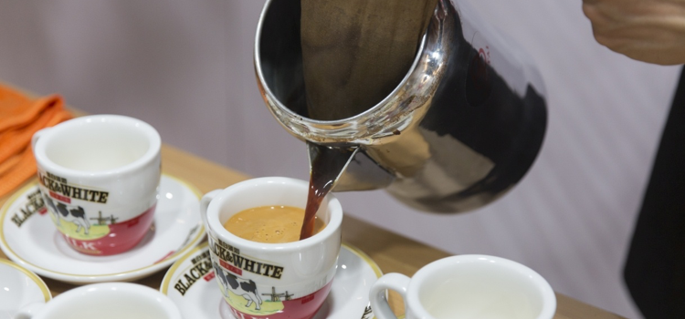

众所周知，香港有美食天堂之称，因其殖民地的背景，香港形成中西合璧的饮食文化，来香港旅游前，请有个心理准备，您将会体验香港地道美食和来自世界各地不同的味道，捧着大肚子回家乡。
茶餐厅
茶餐厅源于冰室，以前专门售卖廉价的仿西式食物，如三文治、咖啡等，广受香港市民欢迎。随着时代变迁，冰室食品种类日益增加，除提供西式食品外，也会售卖中国菜、盖饭、甚至晚饭小菜，因而演变为现今的茶餐厅。在茶餐厅里，您可以品尝丝袜奶茶、菠萝包、蛋挞等的经典食物。
丝袜奶茶
香港的奶茶是由英式茶和其喝茶习惯演变而来的。师傅会把煮好的锡兰红茶以细密的棉袋隔去茶叶，令红茶更香滑，加入淡奶和糖后即可饮用。由于棉袋长期经茶浸泡，网颜色与丝袜非常接近，棉袋还不时被拉长，所以茶餐厅的奶茶又被称为「丝袜奶茶」。

菠萝包
菠萝包不是有菠萝馅料的面包，茶餐厅提供的菠萝包是没有馅料的，面包上有一层由砂糖、鸡蛋、面粉等材料制成的酥皮，经烘焙后酥皮呈金黄色，加上凹凸的脆皮，因形状像菠萝而得名。虽菠萝包没有馅料，但味道口感丰富，是本地人的最爱！
蛋挞
蛋挞源于英国甜点，但做法有异。香港蛋挞分牛油饼皮和酥皮两种，做法是使用小圆盆状的饼模，模中放入饼皮，其后盛着蛋浆，放入烤炉烘焗。制作完成后香气四溢，是香港人下午茶的小吃。

街头小吃
由街上小贩到小吃店铺，街头小吃陪伴着本地人长大，小吃价廉味美，一般食客购买后都立刻食热烘烘的美食。现今小吃店铺都集中在热闹的市区里，例如旺角、油麻地、铜锣湾等等。
臭豆腐
若说一种让人又爱又恨的食物，那肯定是臭豆腐！店主会把豆腐放入特制卤水中腌浸8至10小时，把豆腐放到炸锅里炸至金黄色后即可食用。臭豆腐闻起来很臭，但一食您会发觉是很香的，您来香港旅游时，不妨买一份臭豆腐，咬开它香脆的外皮，慢尝嫩滑豆腐！
鸡蛋仔
鸡蛋仔是香港传统街头小吃，直到现在也受市民欢迎。这是由鸡蛋、砂糖、面粉、淡奶等材料制成的蛋浆，倒进鸡蛋状的模具以炭火或电炉烘烤而成。传统鸡蛋仔呈金黄色蜂巢状，并没有馅料，有浓厚蛋香味，而咬下去口感则外脆内软。
咖喱鱼蛋
走到小吃店，您会发现总有食客以竹签串起鱼丸进食，这就是香港驰名的咖喱鱼蛋！店主把鱼丸经油炸处理后，以不同秘方的咖哩汤料烹调。咖喱鱼蛋入口弹牙之余，微辣的咖喱更带有淡淡椰香，极具风味！
米其林星级餐厅
1. 利苑酒家
创建三十余年的利苑酒家，一直以来都走在香港粤菜馆的尖端，利苑酒家几十年来已经研发了上千款菜式，包括“XO酱”，“杨枝金露”都是家喻户晓的美食。此外，外皮酥脆如饼干的“冰烧三层肉”、利用中医知识搭配出的“滋补炖响螺”，以及必须先预约的功夫菜货时令特色菜，都相当值得一尝。
米其林星级: *
参考价格: HKD 100 – 750
营业时间：午餐 11：30 – 15：00；晚餐18：00 – 23：30
电话：+852 2392 5184 (旺角总店)
总店地址：旺角洗衣街121号（更多分店详情，请浏览官网）
官网：www.leigarden.com.hk
2. 添好运点心专卖店
添好运堪称香港最平价的米其林美食！如果看到店外等候入座的人流，你不需要感到意外。这里供应25款由厨师巧手制作、价格实惠的点心，包括不可不试的虾饺、酥皮焗叉烧包和陈皮牛肉球。菜单上的食物款式会每月更新一次。每道菜的价格约在港币10块到20块。
米其林星级: *
参考价格：HKD 50 – 100
营业时间：星期一至五: 10:00-22:00 ;星期六至日: 09:00-22:00
电话：+852 2788 1266 (深水埗总店)
深水埗总店地址：深水埗福荣街 9-11号
3. 甘牌烧鹅
从祖父辈创业至今已经70多年，甘氏出品的烧鹅早已远近驰名，现由第三代传人在湾仔开设全新的餐馆，承传父辈厨艺。与父辈共事多年的老师傅以甘氏家传秘方炮制的烧鹅，挂在窗前令人垂涎欲滴。烧乳猪、鹅头和鹅红也非常美味。小店只有三十多个位置，所以经常等位。
米其林星级: *
参考价格：HKD 50 – 150
营业时间：11：30 – 21：30
电话：+852 2520 1110
地址：湾仔轩尼诗道226号， 寶華商業中心地下
官网： www.krg.com.hk
4. Beefbar
源自摩纳哥的牛扒房在雪广街开始的分店，是中环的新时尚热点，主打顶级牛排：美国安格斯牛、澳洲安格斯牛、澳洲和牛以及神户牛，四大王牌牛肉、多种不同部位及一人或者多人份量任你选择。以白色云石搭配黑色皮革的装潢别具风格。午餐供应六种主题各异的套餐，深得上班族喜爱。
米其林星级: *
参考价格：HKD 300 – 1,000
营业时间：12：00 – 14：30;18：30 – 22：30
电话：+852 2110 8853
地址：中环雪厂街 16号 Club Lusitano 2楼
5.何洪记
要数香港历史最悠久的面家，怎么能少得了何记？此店自四十年带起在湾仔区营业，多年来其招牌云吞面凭着面条弹牙、汤底鲜甜而口碑载道；其粥品也很出色。为满足食客需求，增加了食物种类，除粥面外，还供应点心和广东小菜。
米其林星级: *
参考价格：HKD 100 – 200
营业时间：11：30 – 22：45
希慎店
电话：+852 2577 6028
地址：铜锣湾轩尼诗道 500号希慎广场 1204-1205號鋪
機場店
电话：+852 2323 6690
地址：香港國際機場客運大樓5字樓抵港層5T61號舖
官网： https://www.tasty.com.hk/
6. Caprice
位于四季酒店6楼的Caprice是2017年获2星的法国餐厅，在2013年更摘得3星评级。Caprice的目标是将法国美食，从传统的风格和形式，带领到一个舒适和温馨的环境。阵容鼎盛的厨师团队精心炮制如鹅肝冻批及香草黑松露牛油烤法国鸡等美食；超水准的特选芝士系列也令人一试难忘。
米其林星级: **
参考价格：HKD 1,000 – 2000
营业时间：午餐 12：00 – 14：30；晚餐18：30 – 22：30*
*最后点餐时间
电话：+852 3196 8860
地址：中环金融街8号四季酒店6楼
官网：http://www.fourseasons.com/
7. Amber
米其林2星的Amber，位于中环皇后大道中文华东方酒店7楼。天花板悬着由超过3500个铜管组成的雕塑令人目眩神池，细心有礼且恰当好处的服务，让你感到放心舒适。最吸引食客光顾的是餐厅的扎实的法式厨艺，和同时兼顾大胆与创意的法国菜。喜欢品酒的顾客可以点荟萃菜单，能品尝到六或九款餐酒。午市时段建议早定座位。
米其林星级: **
参考价格：HKD 800 – 2,000
营业时间：07：00-10:30;12:00-14:30; 18:30-22:30
电话：+852 2132 0066
地址：中环皇后大道中15号置地文华东方酒店7楼
官网： http://www.amberhongkong.com/
8. 新同乐
从1969年创业至今，新同乐的高级粤菜一直备受顾客的推崇，继尖沙咀开店后，中环也设置了分店，驰名的菜式如 百花脆皮乳猪件和烧汁干煏牛肋骨、鲜蘑菇焗酿蟹盖，这里的鲍鱼也是必须得尝一尝的。
米其林星级: **
参考价格：HKD 400 – 2,000
营业时间：11:30-15:00; 18:00-23:00
电话：+852 2152 1417
地址：尖沙咀弥敦道132号美丽华商场4楼
官网：www.suntunglok.com.hk
9. 龙景轩
在龙景轩进餐，可以名副其实地坐拥动人心弦的维多利亚港全景；龙景轩在2008年被列入米其林指南，2009年获3星评级，其后几年均为3星评级。龙景轩采用最新鲜及上乘材料作为传统粤菜的食材，推荐的菜品有“鲍鱼鸡粒酥”、“龙带玉梨香”、“龙太子蒸饺”等。这里菜式选择多样，且每一道菜都经过精心雕琢，卖相及其具有吸引力。
米其林星级: ***
参考价格：HKD 500 – 2,500；
营业时间：
午餐（周一至周五）： 12:00 – 14:30；
午餐（周六至周日和公共假日） 11：30 – 15：00；
晚餐18：00 – 22：30*
*最后点餐时间
电话：+852 3196 8880
地址：中环金融街8号四季酒店4楼
官网：http://www.fourseasons.com/
10. L’Atelier de Joel Robuchon
被誉为世纪三大名厨之一的 Joel Robuchon，在巴黎36岁开设第一家餐厅，3年后就获得3星评级。在香港中环开设的这家也摘得了米其林3星评级。本餐厅尊重食物原本的味道，为了让食材能够保留自己独特的本质，且能彼此和谐交融，采用了传统精致的烹饪方式，炮制出外观漂亮吸引的菜式。也设立了专卖米其林大师级甜品 Le Salon De The & La Boutique，以平民价格供应。
米其林星级: ***
参考价格：HKD 800 – 2,000
营业时间：07:30-10:00;12:00-14:30; 18:00-22:30
电话：+852 2166 9000
地址：皇后大道中15号置地广场401号
官网： www.robuchon.hk